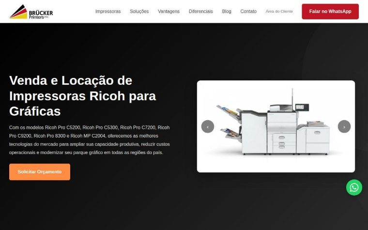

Case 01 · Criação de site
A Brucker não existia no Google. Agora existe.
O problema. Empresa de impressoras sem site nenhum, perdendo contato para concorrente que tinha.
O que eu fiz. Site institucional do zero, com a estrutura de SEO montada junto com as páginas, e não remendada depois.
Primeira página do Google em 30 dias